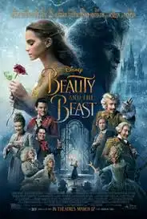

This is the Beauty and the Beast short story. In a far away land, lived a merchant and his beautiful daughter named Beauty. One day, the merchant got lost in the woods and reached a castle. He went inside and seeing nobody inside, decided to spend the night there.
Next morning, when the merchant was leaving he saw beautiful roses in the garden. He thought of Beauty and plucked one. Suddenly, a horrible beast came behind him and screamed at him for stealing from his garden. The merchant was scared and explained he plucked the rose for his daughter Beauty. The beast said he would let him go if he promised to send Beauty to stay with him. The merchant fearfully agreed.
At home, he sorrowfully told Beauty the whole story. Beauty put her father’s worries to rest and went to the castle. Initially, she was scared of the beast but in a few days she realized that the beast was kind and gentle. One day in the magic mirror gifted by the beast, beauty saw that her father was ill. Unable to see her sadness, the beast let her go home. Beauty was glad to be home again. Under Beauty’s care, her father quickly recovered.
One day, she thought of the beast and saw into the magic mirror. She saw that the beast too was ill. She went to the castle to meet him. Beauty saw the beast moaning in pain and dying, he was very glad to see her. She held him and sobbed and told him that she loved him and kissed him softly. At that very instant, the beast changed into a handsome prince. Beauty was surprised, the prince explained that her sweet words had broken the spell that was cast on him by a witch. They soon got married and lived happily ever after.
Beauty and the Beast is that we should value inward characteristics such as kindness over other superficial qualities, such as wit and appearance.